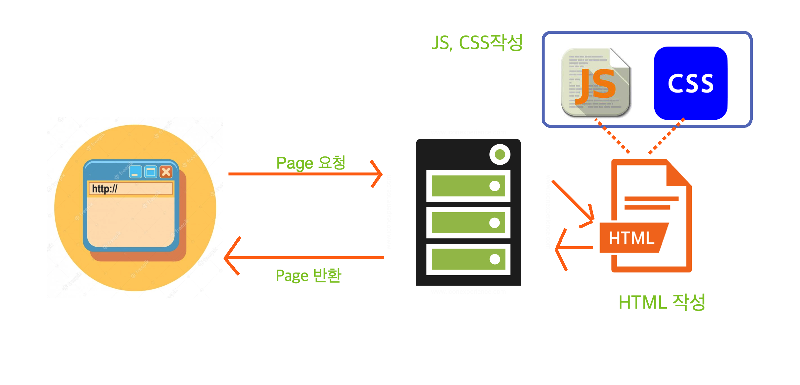
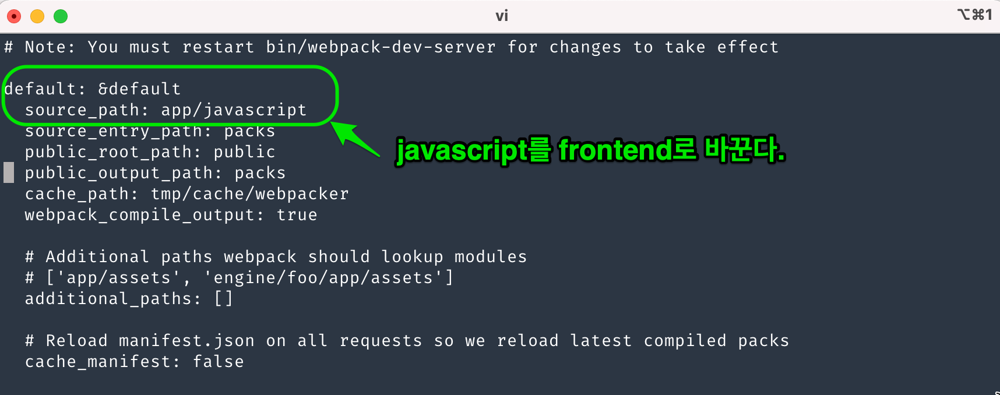

View
Table of Contents
1 레일즈 assets처리 과정 - 옛날 방식

Figure 1: view1
view를 작성한다는 것은 html파일 작성, css작성, js작성 3가지를 말한다. html은 위에서 보듯이 client로 전송되지만, css와 js는 server에 존재한다. html에서는 css와 js의 위치정보만 기술해준다면 client에서 down받은후 browser가 html을 실행하면서 css와 js를 load하는 건 문제가 없어 보인다. 그런데 다음을 생각해 보자. 우리는 a,b,c.css를 만들었다. 그리고 a,b,c.js도 만들었다. css는 css만 모아놓은 assets/stylesheet/라는 폴더에 넣고, js는 assets/javascript/라는 폴더에 넣었다. html파일에서는 <script type="text/javascript" src="http://212.223.21.11/assets/javascript/a.js">,<script type="text/javascript" src="http://212.223.21.11/assets/javascript/b.js">,<script type="text/javascript" src="http://212.223.21.11/assets/javascript/c.js"> 로, css는 <link rel="stylesheet" href="http://212.223.21.11/assets/stylesheet/a.css">,<link rel="stylesheet" href="http://212.223.21.11/assets/stylesheet/b.css">,<link rel="stylesheet" href="http://212.223.21.11/assets/stylesheet/c.css">로 참조한다고 하자. 이런식으로 server에 css와 js를 html에서 하나 하나 가져오는 방식은 옛날 방식이다. 여기에는 크게 2개의 문제가 있다. 속도 문제가 발생한다. http 통신은 비용이 많이 든다. 하나를 다운로드 받고, 다시 또 하나를 다운받는 방식은 너무나도 오랜 시간이 걸린다. 두번째 파일로 load되는 javascript 내의 변수나 함수는 global scope를 가지기 때문에, <script>내에서 사용되는 변수는 naming conflict문제가 발생할 수 있다. 즉, 내가 다운받는 js의 모든 함수나 변수를 알지 못한다면, <script>내에서 만드는 변수나 함수 이름은 충돌의 가능성이 있다는 것이다. 그래서 rails에서는 이런 css와 js 그리고 image같은 것을 묶었다. 묶은 후에 한번에 다운 받을 수 있게 했다. 이것을 가능하게 해준것은 sprocket이였다. app/assets/javascript/application.js와 app/assets/stylesheet/application.css에는 a.js, b.js,c.js를 참조할 수 있게 해서, application.js라는 하나의 파일을 다운 받을수 있게 했다. 다운로드 속도문제를 개선하기 위해서 압축하게 했다. 그리고 이렇게 하나의 파일을 다운로드 받아 사용하게 되면 naming conflict를 해결할 수도 있었다. 왜냐면 sprocket은 a.js, b.js,c.js를 분석해서 참조하는 js간의 depedency를 분석해서, 외부에서 호출되지 않도록 내부 변수로 만들어버리는 코드를 집어넣어서 naming conflict를 방지한다. webpack과 동일한 작업을 한다. 이런 작업을 compile이라고 부른다. 그런데 rails6에서는 webpack이 공식 사용된다.
2 Webpack에 대해서
rails에서 예전에는 sprocket을 사용했지만, 지금은 nodejs의 webpack을 rails에 맞게 사용한 webpacker를 사용한다. 물론 css는 지금도 sprocket방식을 이용하고 js는 webpacker를 사용할 수 있지만, 둘 다 webpacker를 사용하는 방식으로 난 처리할 것이다. asset을 사용하기위해선 webpacker를 이해해야한다. 즉, webpack이 무엇인지 알 필요가 있다. 위에서도 설명했지만, 한번 더 설명한다고 보면 된다.
2.1 webpacker의 등장 [기존 js load의 문제점 ]
webpack이 무엇인지 잘 설명한 자료가 있어서 link를 걸어본다. https://ingg.dev/webpack/ , https://joshua1988.github.io/webpack-guide/motivation/why-webpack.html
webpack을 사용하는 이유는 우선 javascript와 관련이 있다. webpack을 사용하기 이전에 javascript를 사용하는 방식은 script 태그에서 js를 load해서 사용했다. 아래는 math.js와 app.js를 load해서 사용하는 예이다.
[my.html]
<!DOCTYPE html> <html> <head> </head> <body> <script src="./src/math.js"></script> <script src="./src/app.js"></script> </body> </html>
[math.js]
function sum(x, y) { return x + y; }
[app.js]
sum(1, 2) console.log(sum(1, 2)); // 3
my.html에서는 math.js와 app.js를 load해서 사용한다. 그런데 가만 보면 math.js에서 sum함수를 정의하고 app.js에서 사용한다. 이것은 별 문제가 되지 않아 보인다. my.html에서는 math.js와 app.js에서 정의된 변수나 함수를 사용할 것이기 때문에 sum함수를 사용하는게 별 문제가 없어보인다. 그런데 my.html에서 sum이란 변수를 만들어서 사용하려고 하면 어떨까? 예를 들어 다음과 같이 쓴다면… 이런 실수를 할 일은 없다. 왜냐면, sum함수를 사용한다는 것은 load한 js에서 sum함수에 대한 definition이 있다는 것을 안다는 것이기 때문에 sum이라는 변수를 사용하지 않을것이기 때문이다. 여기서 지적하는 것은 load한 js에서 정의된 함수나 변수의 scope가 전역적이라는 것을 말하는 것이다. 즉 load한 js파일내에 어떤 함수와 어떤 변수가 정의되었는지 알수 가 없는데, 만일 my.html에서 사용된 변수나 함수가 load된 js에 있다면 문제가 생긴다는 것이다.
sum = 1; sum(3, 4) //Uncaught TypeError: sum is not a function
2.2 js 문제점의 해결 [ module화 -ES6 ]
js를 load하면 scope가 전역적이 되어 버려서 naming conflicts가 일어난다. 이를 해결하기 위한 방법은? 그렇다! name space를 만드는 것이다. name space를 만드는 방식이 module화이다. ES6에서 보면 module을 export를 써서 만들고, import로 module을 가져온다. 이렇게 해서 naming conflicts를 해결할 수 있다. 아래를 보자.
export function sum(x, y) { return x + y }
import * as math from "./math.js" / import {sum} from "./math.js" / sum만 가져오고 싶다면 이렇게 사용할 수도 있다.
console.log(math.sum(1, 2));
2.3 webpack
ES6가 모든 browser에서 동작하지 않기 때문에 그 대안으로 webpack을 사용한다. webpack은 entry포인트가 되는 js로 부터, 해당 js가 참조하는 의존하는 모든 js를 찾는다. 그리고 하나의 js로 묶어 버린다. 이렇게 하면 name space문제를 해결할 수 있다고 하는데, 모르겠다. 여튼 webpack이 뭔지는 알것같다. webpacker를 사용해서 rails 6와 bootstrap5를 webpacker를 사용해서 처리하는 과정을 살펴보자.
3 webpacker 사용법
우선 우리가 생각해야 하는 것은 javascript나 stylesheet를 작성한 것은 어디엔가 모아둔다는 것이다. 그리고 모아둔 javascript들을 하나의 파일로 만든다는 것이다. 또한 이렇게 만든 파일을 html에서는 어떻게 사용하는가? 이런 3가지 문제에 대해 알아야 한다. 사용되는 용어가 있다. 모아둔 js나 css파일에서 필요한것을 묶어서 하나의 파일로 만드는데, 어떤 css,어떤 js를 포함할것인가를 포함한 manifest파일같은게 있다. 이것이 entry포인트라고도 부르고 그냥 pack이라고도 부른다. pack파일에 보면 require나 import를 통해서 사용할 directory혹은 module을 가져온다. 여기에는 npm이나 yarn으로 시스템에 설치된 javascript모듈을 가져오거나, 내가 만든 폴더를 가져올 수 있다. 이렇게 가져온 것들을 compile이라는 과정을 통해서 하나의 파일로 만드는 것이다.
3.1 (1) asset을 모아두는 곳
asset을 모아 두는 곳은 app/javascript 라는 폴더다. css,image,js를 모두 넣을 수 있다. javascript라는 폴더이름은 webpack에선 모든 resource를 javascript관점에서 보기 때문이다. 이름을 바꿔도 된다. 이름을 frontend 라는 폴더로 바꾸는게 더 합리적이라고 본다. 그래야 모든 assets을 다루는 폴더라고 볼 수 있기 때문이다. 이름을 바꾸게 되면, webpacker.yml의 내용도 바꿔야 한다.

Figure 2: source path
4 webpacker 사용법 - bootstrap
나는 https://bootrails.com/blog/rails-bootstrap-tutorial 여기를 참조했다.
[1] gem webpacker
=> 현재 rails6에서는 Gemfile에 기본적으로 webpacker가 설치되어 있다. 따라서 Gemfile에 webpacker를 설치하지 않아도 된다.
[2] app/javascript to app/frontend 이름 변경
=> javascript라는 이름을 frontend로 변경하는 이유는 javascript뿐만 아니라 모든 asset을 처리할 이유라고 한다.
[3] config/webpacker.yml에서 sourcepath변경
=> [2]에서 javascript라는 폴더를 frontend로 변경했기 때문에 webpacker.yml에서도 frontened로 변경시켜야 한다.
[4] yarn으로 bootstrap과 popper.js를 설치한다.
$/myapp> yarn add bootstrap@5.0.0-beta2 $/myapp> yarn add @popperjs/core@2.0.0-alpha.1